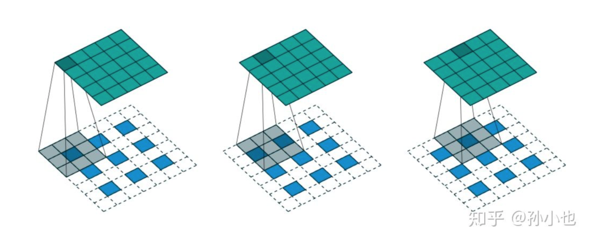
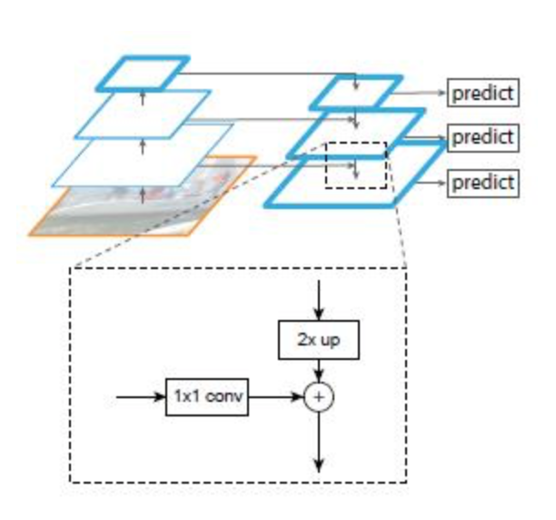

为什么输入网络前要对图像做归一化？ > 1. 把不同的图片映射到同一坐标系，使其具有相同的尺度及相似的特征分布。 > 2. 一定程度上消除了过度曝光，质量不佳或者噪声等各种原因对模型权值更新的影响。 > 3. 加快gradient更新的收敛速度。
权重初始化方法有哪些？ > 1. Small random numbers (gaussian with zero mean and 1e-2 standard deviation): Works okay for small networks, but problems with deeper networks.

- Xavier: 基本思想是保持输入和输出的方差一致，这样就避免了所有输出值都趋向于0. 初始化方差为:
std = sqrt(node_in). 参考 https://zhuanlan.zhihu.com/p/27919794 - Kaiming: 在ReLU网络中，假定每一层有一半的神经元被激活，另一半为0，所以，要保持variance不变，只需要在Xavier的基础上再除以2. 初始化方差为:
std = sqrt(node_in / 2)
- Xavier: 基本思想是保持输入和输出的方差一致，这样就避免了所有输出值都趋向于0. 初始化方差为:
说说 FCN 的基本思想. > FCN对图像进行像素级的分类，从而解决了语义级别的图像分割问题。与经典的CNN在卷积层使用全连接层得到固定长度的特征向量进行分类不同，FCN可以接受任意尺寸的输入图像，采用反卷积层对最后一个卷基层的特征图（feature map）进行上采样，使它恢复到输入图像相同的尺寸，从而可以对每一个像素都产生一个预测，同时保留了原始输入图像中的空间信息，最后在上采样的特征图进行像素的分类。
什么是转置卷积? > 事实上，卷积运算还可以通过矩阵乘法来实现.假设我们定义高和宽分别为4的输入X，以及高和宽分别为3的卷积核K, 卷积运算输出高和宽分别为2. > \[\frac{h(w) - k + 2p}{ s } + 1 \] > 我们将卷积核K改写成含有大量零元素的稀疏矩阵W，即权重矩阵。权重矩阵的形状为(4, 16)， 其中的非零元素来自卷积核K中的元素。将输入X逐行连结，得到⻓度为16的向量。然后将W与向量化的X做矩阵乘法，得到⻓度为4的向量。对其变形后，我们可以得到和上面卷积运算相同的结 果。可⻅，我们在这个例子中使用矩阵乘法实现了卷积运算。 > 现在我们从矩阵乘法的⻆度来描述卷积运算。设输入向量为\(x\)，权重矩阵为\(W\)，卷积的前向计算 函数的实现可以看作将函数输入乘以权重矩阵，并输出向量\(y=Wx\).们知道，反向传播需要依据链式法则。由于\(\triangledown_x y = W^T\)，卷积的反向传播函数的实现可以看作将函数输入乘以转置后的权重矩阵\(W^T\)。而转置卷积层正好交换了卷积层的前向计算函数与反向传播函数:转置卷积层的这两个函数可以看作将函数输入向量分别乘以\(W^T\) 和 \(W\). > 不难想象，转置卷积层可以用来交换卷积层输入和输出的形状。让我们继续用矩阵乘法描述卷积。设权重矩阵是形状为4 × 16的矩阵，对于⻓度为16的输入向量，卷积前向计算输出⻓度为4的向量。假如输入向量的⻓度为4，转置权重矩阵的形状为16 × 4，那么转置卷积层将输出⻓度为16的向量。在模型设计中，转置卷积层常用于将较小的特征图变换为更大的特征图。在全卷积网络中，当输入是高和宽较小的特征图时，转置卷积层可以用来将高和宽放大到输入图像的尺寸。

什么是空洞卷积（Dilated convolution）? > 1. 从kernel（卷积核）角度：相当于在标准概念的kernel（卷积核）中，相邻点之间添加rate-1个0，然后使用扩张后的kernel（卷积核）与原图进行卷积。如下图rate=2，相当于标准的33卷积核变为55卷积核，每一行中间添加2-1个0 > 2. 从原图角度：使用标准概念的kernel（卷积核）在原图中每隔rate-1进行像素点卷积采样。如下图rate=2，在原图中每隔rate-1进行卷积。

解释下 Unet 的 Architecture. > Unet 使用 encoder 和 decoder 的架构，在encoder下采样4次，一共下采样16倍。对称地，其decoder也相应上采样4次，将encoder得到的高级语义特征图恢复到原图片的分辨率。相比于FCN和Deeplab等，UNet共进行了4次上采样，并在同一个stage使用了skip connection，而不是直接在高级语义特征上进行监督和loss反传，这样就保证了最后恢复出来的特征图融合了更多的low-level的feature，也使得不同scale的feature得到了的融合。
解释下 FPN 网络. > 一个自底向上的线路，一个自顶向下的线路，横向连接（lateral connection）。图中放大的区域就是横向连接，这里1 * 1的卷积核的主要作用是减少channel的数量，也就是减少了feature map的个数，并不改变feature map的尺寸大小。 > 1. 自底向上其实就是网络的前向过程。在前向过程中，feature map的大小在经过某些层后会改变，而在经过其他一些层的时候不会改变，作者将不改变feature map大小的层归为一个stage，因此每次抽取的特征都是每个stage的最后一个层输出，这样就能构成特征金字塔。 > 2. 自顶向下的过程采用上采样（upsampling）进行，而横向连接则是将上采样的结果和自底向上生成的相同大小的feature map进行融合（merge）。在融合之后还会再采用3 * 3的卷积核对每个融合结果进行卷积，目的是消除上采样的混叠效应（aliasing effect）。并假设生成的feature map结果是P2，P3，P4，P5，和原来自底向上的卷积结果C2，C3，C4，C5一一对应。

什么是Anchors？ > 参考 https://zhangruochi.com/Object-Detection-Summary/2020/03/06/
解释 ROI Pooling 和 ROI Align 的区别. > 对于一个region proposal，首先从原图经过全卷积网络到特征图，得到的候选框位置可能存在浮点数，进行取整操作从而出现第一次量化；其次，在ROI Pooling求取每个小网格的位置时也同样存在浮点数取整的情况。这两次量化的结果都使得候选框的位置会出现偏差，在论文里，作者把它总结为“不匹配问题（misalignment） 。为了解决ROI Pooling的上述缺点，ROI Align提出改进的方法。ROI Align的思路是：取消量化操作，使用双线性内插的方法获得坐标为浮点数的像素点上的图像数值,从而将整个特征聚集过程转化为一个连续的操作
请解释下two stage object detection 的发展脉络。 > 参考 https://zhangruochi.com/Object-Detection-Summary/2020/03/06/ > 讲解 R-CNN, Fast R-CNN, Faster RCNN, Mask R-CNN 的发展轨迹。
请解释下one stage object detection 的发展脉络。 > 参考 https://zhangruochi.com/Object-Detection-Summary/2020/03/06/ > 讲解YOLO1,YOLO2,YOLO3,YOLO4